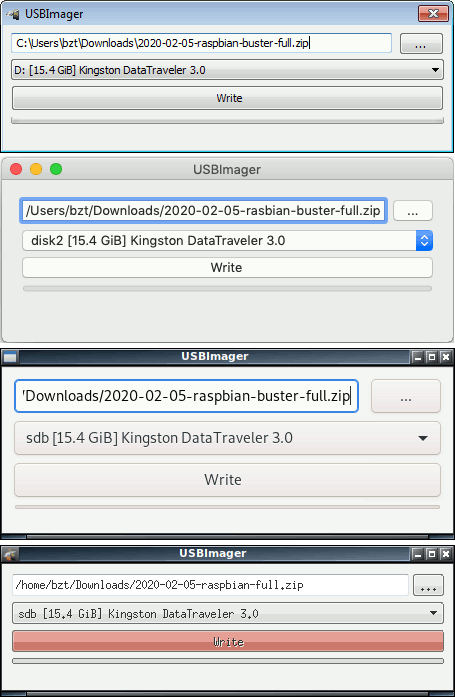

Üdvözöl az USBImager!
Az USBImager egy nagyon nagyon egyszerű, ablakos alkalmazás, amivel tömörített lemezképeket lehet USB-s tárolókra írni és mentéseket csinálni. Elérhető Windows, MacOS és Linux alatt is. A felülete annyira egyszerű, amennyire csak lehetséges, teljesen bloat-mentes.
 Letöltés (
Letöltés (
A letöltés az operációs rendszerednek megfelelő, egyszerűsített (csak írás) interfészű binárisra mutat. A teljes interfészért és más platformokért látogass el a repó oldalára.
Ez az alkalmazás Szabad és Nyílt Forráskódú! A nagyon megengedő MIT licensz feltételei szerint kerül terjesztésre.
Telepítés
- Töltsd le a rendszerednek megfelelő usbimager_*.zip fájlt a repóból (kb. 192 Kilobájt mindegyik)
- Csomagold ki ide: C:\Program Files (Windows), /Applications (MacOS) vagy /usr (Linux)
- Ennyi!
Használat
- Az első sorba tallózd be a letöltött operációs rendszer lemezképet, amit ki szeretnél írni
- A második sorban válaszd ki azt a meghajtót, ahová írni szeretnéd
- Kattints a "Kiír" gombra
Képernyőképek
Képességek
- Nyílt Forráskódú és MIT licenszű
- Hordozható futtatható, nincs szükség telepítésre, csak ki kell csomagolni
- Kicsi. Nagyon kicsi, pár kilobájt csak, és mégsincs függősége
- Nincs benne kémprogram sem reklám, mint az etch*r-ben, teljesen GDPR kompatíbilis
- Minimalista, többnyelvű, natív interfész minden platformon
- Igyekszik bolondbiztos lenni, nem engedi a rendszerlemezt felülírni
- Csak szinkronizált írási műveletet végez, azaz minden biztosan fizikailag kikerült a lemezre, amikor a csík 100%-hoz ér
- Képes az írás helyességének ellenőrzésére visszaolvasással és összehasonlítással
- Képes nyers lemezképeket olvasni: .img, .bin, .raw, .iso, .dd, stb.
- Képes futásidőben kitömöríteni lemezképeket: .gz, .bz2, .xz, .zst
- Képes csomagokat kezelni: .zip (PKZIP és ZIP64), .zzz (ZZZip), .tar, .cpio, .pax *
- Képes mentéseket csinálni nyers és ZStandard tömörített formátumban
- Képes lemezképet küldeni mikrokontrollereknek soros vonalon
- 18 különféle nyelven is elérhető